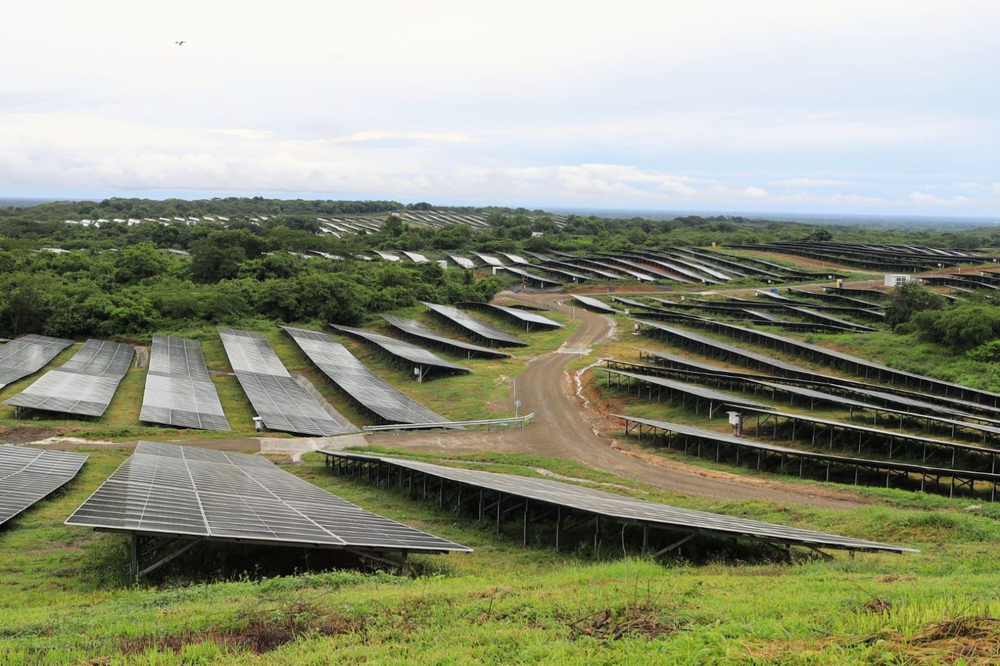

El cielo de Sabanalarga
Ovnis / Avistamientos en el Atlántico

El misterio en el cielo
Sabanalarga, uno de los municipios más representativos del departamento del Atlántico, cuenta con paisajes abiertos y extensas zonas rurales desde donde es posible observar el cielo nocturno. Sin embargo, en ocasiones, algunos acontecimientos luminosos han despertado la curiosidad de sus habitantes y generado preguntas sobre lo que ocurre más allá de las nubes.
En febrero de 2024, varios habitantes del departamento del Atlántico comenzaron a compartir imágenes de extrañas luces que se desplazaban por el cielo. Los reportes llegaron desde diferentes municipios, entre ellos Sabanalarga, donde ciudadanos observaron puntos luminosos que parecían avanzar siguiendo una trayectoria ordenada.
Los videos comenzaron a circular por las redes sociales y rápidamente surgieron diferentes interpretaciones. Algunas personas relacionaron las luces con posibles objetos voladores no identificados, mientras otras plantearon que podían tratarse de aeronaves, satélites o fenómenos astronómicos.
La formación de los puntos luminosos llamó especialmente la atención. A diferencia de una estrella o un objeto aislado, las luces parecían desplazarse una detrás de otra, creando una imagen poco habitual para quienes observaban el firmamento desde sus hogares.
Posteriormente, las explicaciones difundidas por los medios de comunicación relacionaron el fenómeno con los satélites Starlink, pertenecientes al proyecto de internet satelital de SpaceX, y con elementos asociados al lanzamiento de un cohete Falcon 9 desde Florida, Estados Unidos.
Este tipo de satélites puede observarse desde diferentes lugares del planeta cuando reflejan la luz solar. Debido a su alineación y movimiento, pueden parecer una cadena de luces que atraviesa lentamente el cielo, especialmente durante determinados momentos del amanecer o el atardecer.
Aunque el episodio tuvo una explicación tecnológica, también dejó una pregunta interesante entre los aficionados a la ufología: ¿cuántos fenómenos observados desde la Tierra parecen inexplicables simplemente porque desconocemos su origen? El cielo de Sabanalarga continúa siendo un escenario que invita a observar, investigar y descubrir.
Entre las estrellas, los satélites y las luces que recorren el firmamento, cada noche ofrece una nueva oportunidad para contemplar el universo. Y aunque no todas las luces esconden un misterio extraterrestre, algunas observaciones siempre consiguen despertar nuestra imaginación.
¿Qué podemos observar en el cielo?
Satélites Starlink: forman cadenas de puntos luminosos que se desplazan por el cielo y pueden confundirse con objetos desconocidos.
Meteoros: pequeños fragmentos de material espacial que producen destellos luminosos al ingresar en la atmósfera terrestre.
Aeronaves: aviones y helicópteros pueden generar luces visibles a grandes distancias, especialmente durante la noche.
Fuentes de consulta
El Heraldo. (2024). EH verifica: ¿se vieron ovnis en el Atlántico y otros departamentos? Reportes de luces en municipios de la región.
Consultar fuenteNoticias Caracol. (2024). ¿Eran ovnis? Extrañas luces se vieron en Antioquia, Atlántico y otros departamentos. Explicación sobre los satélites.
Consultar fuenteSpaceX. Información oficial sobre el programa Starlink y su constelación de satélites.
Consultar fuente